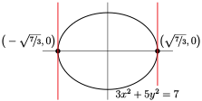
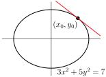

Seção 1 Derivação implícita
Objetivos: Estrutura
implicita
implicita 2
Implicite
Texto
Subseção 1.1 Derivação Implicita
Diferenciação implícita é uma maneira simples usada para calcular derivadas de funções ou
quando não se conhece uma fórmula explícita para a função, mas conhece uma equação que a função obedece ou
mesmo quando temos uma fórmula explícita, mas complicada, para a função, e a mesma obedece a uma equação simples.
Para realizar essa tarefa primeiro derivamos de ambos os lados da equação e então isolamos a derivada desejada. Na verdade, já fizemos isso, sem usar o nome “diferenciação implícita”, quando encontramos a derivada de \(\log x\) anteriormente. No ocasião, sabíamos que a função \(f(x)=\log x\) satisfaz a equação \(e^{f(x)}=x\) para todo \(x\text{.}\) Ou seja, as funções \(e^{f(x)}\) e \(x\) são de fato a mesma função e, portanto, têm a mesma derivada. Então obtemos
Em seguida, usamos a regra da cadeia para obter \(\dfrac{\dd }{\dd x}\left[e^{f(x)}\right]=e^{f(x)}f'(x)\text{,}\) que nos disse que \(f'(x)\) obedece à equação
A maneira típica de se acostumar com a diferenciação implícita é praticar com problemas envolvendo retas tangentes às curvas. Então, a seguir estão alguns exemplos de encontrar as equações de retas tangentes a curvas.
Exemplo 1.1. Encontrando uma reta tangente usando diferenciação implícita.
Encontre a equação da reta tangente a \(y=y^3+xy+x^3\) em \(x=1\text{.}\)
Este é um exemplo usual, mas um pouco complicado pelo fato de a curva ser dada por uma equação cúbica — o que significa que não podemos resolver diretamente para \(y\) em termos de \(x\) ou vice-versa. Então, realmente precisamos da derivação implícita.
Primeiro observe que quando \(x=1\) a equação, \(y=y^3+xy+x^3\text{,}\) da curva simplifica para \(y=y^3+y+1\) ou \(y^3=-1\text{,}\) que podemos resolver 1 : \(y=-1\text{.}\) Portanto, sabemos que a curva passa por \((1,-1)\) quando \(x=1\text{.}\)
Agora, para encontrar a inclinação da reta tangente em \((1,-1)\text{,}\) finja que nossa curva é \(y=f(x)\) para que \(f(x)\) obedece
\begin{align*} f(x) \amp= f(x)^3 + x f(x) + x^3 \end{align*}para todos os \(x\text{.}\) Derivando ambos os lados fornece\begin{gather*} f'(x)=3f(x)^2f'(x)+f(x)+xf'(x)+3x^2 \end{gather*}Neste ponto podemos isolar para \(f'(x)\) e escrevê-lo em termos de \(f(x)\) e \(x\text{,}\) mas como só queremos respostas quando \(x=1\text{,}\) vamos substituir \(x=1\) e \(f(1)=-1\) (já que a curva passa por \((1,-1)\)).
Substituindo \(x=1,\ f(1)=-1\) nos dá
\begin{align*} f'(1)\amp=3f'(1)-1+f'(1)+3 \amp \text{ and so } f'(1)=-\frac{2}{3} \end{align*}A equação da reta tangente é
\begin{gather*} y=y_0+f'(x_0)(x-x_0)=-1-\frac{2}{3}(x-1) =-\frac{2}{3}x-\frac{1}{3} \end{gather*}
Podemos reescrever a equação da reta tangente como \(2x+3y=-1\text{.}\)
NoExemplo 1.1, substituímos \(y\) por \(f(x)\) no meio do cálculo. Na verdade, não temos que fazer isso. Quando estamos escrevendo nossa solução, podemos lembrar que \(y\) é uma função de \(x\text{.}\) Então podemos começar com
e derivar lembrando que \(y\equiv y(x)\)
\begin{align*} y^{\prime} \amp= 3 y^2 y' + xy' + y + 3x^2\\ \end{align*}E agora substitua \(x=1, y=-1\) para obter
\begin{align*} y'(1) \amp= 3 \cdot y'(1) + y'(1) - 1 + 3 \amp \text{and so}\\ y'(1) \amp= -\frac{2}{3} \end{align*}A próxima é ao mesmo tempo um pouco mais fácil (porque é quadrática) e um pouco mais difícil (porque nos pedem a tangente em um ponto genérico da curva, não em um específico).
Exemplo 1.2. Outra reta tangente por derivação implicita.
Seja \((x_0,y_0)\) um ponto da elípse \(3x^2+5y^2=7\text{.}\)
(a)
Encontre a equação da reta tangente para \(x_0=1\) e \(y_0\) positivo.
Quando \(x=1\) a equação dada satisfaz
\begin{align*} 3 + 5y^2 \amp= 7\\ 5y^2 \amp= 4\\ y \amp= \pm \frac{2}{\sqrt{5}}. \end{align*}Estamos interessados apenas \(y\) no positivo, assim nosso ponto da curva é \((1,2/\sqrt{5})\text{.}\)Agora usamos a derivação implícita para encontrar \(\dfrac{\dd y}{\dd x}\) neste ponto. Primeiro simulamos que resolvemos a curva explicitamente, para algum intervalo de \(x\text{,}\) com \(y=f(x)\text{.}\) A equação fica
\begin{align*} 3x^2 + 5f(x)^2 \amp= 7 \amp \ct{Derivando ambos os lados}\\ 6x + 10 f(x) f'(x) \amp= 0\\ f'(x) \amp= - \frac{3x}{5f(x)} \end{align*}Quando \(x=1, y= 2/\sqrt{5}\) isso se torna
\begin{align*} f'(1) \amp= - \frac{3}{5 \cdot 2/\sqrt{5}} = - \frac{3}{2\sqrt{5}} \end{align*}Então a reta tangente passa por \((1,2/\sqrt{5})\) e tem inclinação \(- \frac{3}{2\sqrt{5}}\text{.}\) Portanto, a reta tangente tem equação\begin{align*} y \amp=y_0+f'(x_0)(x-x_0)\\ \amp= \frac{2}{\sqrt{5}} - \frac{3}{2\sqrt{5}} (x-1)\\ \amp= \frac{7 - 3x}{2\sqrt{5}} \end{align*}ou equvalentemente\begin{equation*} 3x + 2\sqrt{5} y= 7 \end{equation*}
(b)
Em seguida, encontre uma equação para a reta tangente à elipse em um ponto genárico \((x_0,y_0)\text{.}\)
Vamos repetir o processor do item anterior, mas com um ponto genárico \((x_0,y_0)\text{:}\)
-
Um bom primeiro passo aqui é esboçar a curva. Uma vez que esta é uma elipse, é bastante simples.
 Observe que existem dois pontos na elipse — os pontos extremos direito e esquerdo \((x_0,y_0)=\pm\big(\sqrt{\frac{7}{3}},0\big)\) — em que a reta tangente é vertical. Nesses dois casos, a reta tangente é apenas \(x=x_0\text{.}\)
-
Já que isso é quadrático para \(y\text{,}\) poderíamos resolvê-lo explicitamente para obter
\begin{align*} y \amp= \pm \sqrt{\frac{7-3x^2}{5}} \end{align*}e escolha o ramo positivo ou negativo conforme apropriado. Então poderíamos diferenciar para encontrar a inclinação e juntar as coisas para obter a reta tangente.
Mas mesmo neste caso relativamente fácil, é computacionalmente mais limpo e, portanto, menos vulnerável a erros mecânicos, usar a derivação implícita. Então é isso que vamos fazer.
Agora podemos novamente “fingir” que resolvemos a equação da elipse para \(y=f(x)\) perto de \((x_0,y_0)\text{,}\) mas não vamos fazer isso. Em vez disso (como fizemos emExemplo 1.2) apenas lembre-se que quando diferenciamos \(y\) é realmente uma função de \(x\text{.}\) Então a partir de
\begin{align*} 3x^2 + 5y^2 \amp=7 \amp \ct{Derivando em ambos os lados}\\ 6x + 5\cdot 2y \cdot y' \amp= 0 \end{align*}Podemos então resolver isso para \(y'\text{:}\)\begin{align*} y' \amp= -\frac{3x}{5y} \end{align*}onde \(y'\) e \(y\) são ambas funções de \(x\text{.}\)Portanto, no ponto \((x_0,y_0)\) temos
\begin{align*} \left. y' \right|_{(x_0,y_0)} \amp= -\frac{3x_0}{5y_0} \end{align*}Esta é a inclinação da linha tangente em \((x_0,y_0)\) e então sua equação é\begin{align*} y \amp=y_0+y' \cdot (x-x_0)\\ \amp= y_0 -\frac{3x_0}{5y_0}(x-x_0)\\ \end{align*}Podemos simplificar isso multiplicando por \(5y_0\) para obter
\begin{align*} 5y_0 y \amp= 5y_0^2-3x_0x +3x_0^2\\ \end{align*}Podemos simplificar um pouco mais movendo todos os termos que contêm \(x\) ou \(y\) para o lado esquerdo e todo o resto para o direito:
\begin{align*} 3x_0x+5y_0y \amp=3x_0^2+5y_0^2\\ \end{align*}Mas há mais uma coisa que podemos fazer, nossa equação original é \(3x^2+5y^2=7\) para todos os pontos da curva, então sabemos que \(3x_0^2 +5a_0^2=7\text{.}\) Isso simplifica o lado direito.
\begin{align*} 3x_0x+5y_0y \amp=7 \end{align*}Ao derivar esta fórmula para a reta tangente em \((x_0,y_0)\) nós assumimos que \(y_0\ne 0\text{.}\) Mas, na verdade, a resposta final também funciona quando \(y_0=0\) (que significa \(x_0=\pm\sqrt{\frac{7}{3} }\)), para que a reta tangente seja \(x=x_0\text{.}\)
Também podemos verificar que nossa resposta para \((x_0,y_0)\) se reduz à nossa resposta para \(x_0=1\text{.}\)
Quando \(x_0=1\) encontramos \(y_0=2/\sqrt{5}\text{.}\)
Conectando isso em nossa resposta acima dá
\begin{align*} 3x_0x+5y_0y \amp=7 \amp\ct{Substituindo em $(x_0,y_0)=(1,2/\sqrt{5})$}:\\ 3 x + 5 \frac{2}{\sqrt{5}} y \amp= 7 \amp \ct{Simplificando}\\ 3x + 2\sqrt{5} y \amp=7 \end{align*}como solicitado.
Exemplo 1.3. Mais um exemplo.
Em quais pontos a curva \(x^2-xy+y^2=3\) cruza o eixo \(x\) ? As retas tangentes à curva nesses pontos são paralelas?
Primeiro vamos encontrar os pontos pontos em que a curva cruza o eixo \(x\) e então precisamos examinar as retas tangentes.
Encontrar onde a curva cruza o eixo \(x\) é simples. Isso acontece quando \(y=0\text{.}\) Isso significa que \(x\) satisfaz
\begin{align*} x^2-x\cdot 0+0^2\amp=3 \amp \text{ so $x = \pm\sqrt{3}$}. \end{align*}Então a curva cruza o eixo \(x\) – em dois pontos \(\big(\pm\sqrt{3}\,,\,0\big)\text{.}\)Agora precisamos encontrar as retas tangentes nesses pontos. Mas na verdade não precisamos das linhas, apenas de suas inclinações. Novamente podemos fingir que perto de um desses pontos a curva é \(y=f(x)\text{.}\) Aplicando \(\dfrac{\dd }{\dd x}\) a ambos os lados de \(x^2-xf(x)+f(x)^2=3\) produz
\begin{align*} 2x-f(x)-xf'(x)+2f(x)f'(x)\amp=0 \end{align*}etc etc.Mas vamos parar de “fingir”. Apenas certifique-se de lembrar que \(y\) é uma função de \(x\) quando derivamos:
\begin{align*} x^2-xy+y^2 \amp= 3 \amp \ct{comece com a curva e derive}\\ 2x - xy' -y + 2yy' \amp=0 \amp \end{align*}Agora substitua no primeiro ponto, \(x=+\sqrt{3}, y=0\text{:}\)\begin{align*} 2\sqrt{3} - \sqrt{3}y' + 0 \amp=0\\ y' \amp= 2 \end{align*}E agora faça o segundo ponto \(x=-\sqrt{3}, y=0\text{:}\)\begin{align*} -2\sqrt{3} + \sqrt{3}y' + 0 \amp=0\\ y' \amp= 2 \end{align*}Assim, a inclinação é a mesma em \(x=\sqrt{3}\) e \(x=-\sqrt{3}\) e as retas tangentes são paralelas.
Mais um exmplo sobre curvas.
Exemplo 1.4. A curva astróide.
Seja \((x_0,y_0)\) ser um ponto na astroide
Encontre uma equação para a reta tangente ao astróide em \((x_0,y_0)\text{.}\)
Como foi o caso nos exemplos acima, podemos reescrever a equação do astroide próximo a \((x_0,y_0)\) na forma \(y=f(x)\text{,}\) com um explícito \(f(x)\text{,}\) resolvendo a equação \(x^{\frac{2}{3}}+y^{\frac{2}{3}}=1\) . Mas, novamente, é computacionalmente mais simples e, portanto, menos vulnerável a erros mecânicos, usar a derivação implícita. Então é isso que vamos fazer.
Primeiro, já que \((x_0,y_0)\) encontra-se na curva, satisfaz
\begin{gather*} x_0^{\frac{2}{3}}+y_0^{\frac{2}{3}}=1. \end{gather*}Agora, sem fingir que \(y=f(x)\text{,}\) desta vez — apenas certifique-se de lembrar quando derivamos que \(y\) muda com \(x\text{.}\)
\begin{align*} x^{\frac{2}{3}}+y^{\frac{2}{3}} \amp=1\\ \end{align*}Comece com a curva e, em seguida, derive
\begin{align*} \frac{2}{3}x^{-\frac{1}{3}} + \frac{2}{3} y^{-\frac{1}{3}} y' \amp=0 \end{align*}Observe a derivada de \(x^{\frac{2}{3}}\text{,}\) a saber \(\frac{2}{3}x^{-\frac{1}{3}}\text{,}\) e a derivada de \(y^{\frac{2}{3}}\text{,}\) a saber \(\frac{2}{3} y^{-\frac{1}{3}}y'\text{,}\) são definidos apenas quando \(x\ne 0\) e \(y\ne 0\text{.}\) Estamos interessados no caso em que \(x=x_0\) e \(y=y_0\text{.}\) Então é melhor supormos que \(x_0\ne 0\) e \(y_0\ne 0\text{.}\) Provavelmente algo estranho acontece quando \(x_0=0\) ou \(y_0=0\text{.}\) Voltaremos a isso em breve.
Para continuar, definimos \(x=x_0, y=y_0\) na equação acima e resolvemos para \(y'\text{:}\)
\begin{equation*} \frac{2}{3}x_0^{-\frac{1}{3}} +\frac{2}{3} y_0^{-\frac{1}{3}} y'(x)=0 \implies y'(x_0)= -\left( \frac{y_0}{x_0} \right)^{\frac{1}{3}} \end{equation*}Esta é a inclinação da reta tangente e sua equação é\begin{equation*} y=y_0+f'(x_0)(x-x_0) = y_0 -\left(\frac{y_0}{x_0}\right)^{\frac{1}{3}}(x-x_0) \end{equation*}
Agora vamos pensar um pouco sobre qual é a inclinação da linha tangente de \(-\root{3}\of {\frac{y_0}{x_0}}\) nos fala sobre o astroide.
Em primeiro lugar, como observação preliminar, observe que, uma vez que \(x_0^{\frac{2}{3}}\ge0\) e \(y_0^{\frac{2}{3}}\ge0\) a equação \(x_0^{\frac{2}{3}}+y_0^{\frac{2}{3}}=1\) da astróide força \(0\le x_0^{\frac{2}{3}},y_0^{\frac{2}{3}} \le 1\) e portanto \(-1\le x_0,y_0\le 1\text{.}\)
Para todo \(x_0,y_0 \gt 0\) a inclinaçãoé \(-\root{3}\of {\frac{y_0}{x_0}} \lt 0\text{.}\) Portanto, em todos os pontos do asteróide que estão no primeiro quadrante, a reta tangente tem inclinação negativa, ou seja, está “inclinando-se para trás”.
Como \(x_0\) tende a zero, \(y_0\) tende a \(\pm 1\) e a inclinação da reta tangente tende a infinito. Portanto, nos pontos do astroide próximos a \((0,\pm 1)\text{,}\) a reta tangente é quase vertical.
Como \(y_0\) tende a zero, \(x_0\) tende a \(\pm 1\) e a inclinação da linha tangente tende a zero. Portanto, em pontos do astroide próximos a \((\pm 1,0)\text{,}\) a reta tangente é quase horizontal.
Aqui está uma figura que ilustra tudo isso.
Com certeza, como especulamos anteriormente, algo estranho acontece com o astroide quando \(x_0\) ou \(y_0\) é zero. O astroide é têm “bicos” e não tem uma tangente ali.